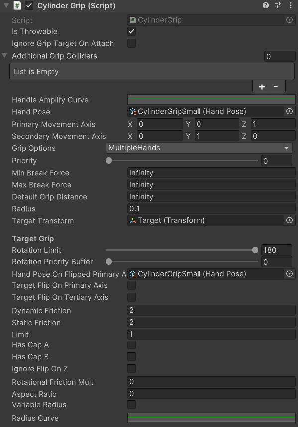

Cylinder Grip
A type of grip that lets you hold items like handles, rods, beams and sticks.
This grip lets you slide your hand across it while not holding the GRIP button.
While holding the GRIP button, your hand stays fixed at its current position along the cylinder grip.
Requirements
A Cylinder Grip must have a Capsule Collider on the same GameObject with Is Trigger usually set to True, and Direction usually set to Z-Axis, although these values are not strictly required. The GameObject must be set to the Interactable layer (internally 15).
Additionally, an Interactable Host is required beside a Marrow Entity on a parent for grips to work.
Example

Properties
| Property Name | Property Type | Property Description |
| Is Throwable | bool |
Usually always true. DOES THIS DO ANYTHING WHEN FALSE? |
| Ignore Grip Target On Attach | bool |
If true, the Transform this grip is on will be used when determining the position of your hand for the grip instead of the assigned Target value. NEEDS CONFIRMATION |
| Additional Grip Colliders | Collider[] |
While this grip is held, the Colliders in this list won't collide with your body. NEEDS CONFIRMATION |
| Handle Amplify Curve | AnimationCurve |
UNKNOWN |
| Hand Pose | HandPose |
When this grip is held, your hand will match the pose assigned. NOTE: Some HandPoses that come with the SDK can break the grip completely (Found by Rusky). |
| Primary Movement Axis | Vector3 |
When this object is gripped, this axis should be pointing in the same direction as your thumb in a "thumbs up" position. Usually set to (0, 0, 1). |
| Secondary Movement Axis | Vector3 |
When this object is gripped, this axis should be pointing down your forearm. Usually set to (0, 1, 0). |
| Grip Options | InteractionOptions |
See InteractionOptions. |
| Priority | float |
The lower this number is, the higher priority this grip has. For example, if at 0, and other grips with priority greater than 0 are near your hand, then this grip will always be grabbed instead of the others. |
| Min Break Force | float |
Usually set to Infinity, this number is the minimum amount of force required for your hand to automatically let go of the grip. |
| Max Break Force | float |
Usually set to Infinity. Honestly not sure why this is here since a Joint doesn't have a BreakForce range value. |
| Default Grip Distance | float |
Usually set to Infinity. Unsure on what this value does, because despite this regularly being Infinity, you can't grab this from an infinite distance away. |
| Radius | float |
This value should roughly match the Radius value of the Capsule Collider this grip belongs to. |
| Target Transform | Transform |
Determines the actual location at which your hand will grab around. |
| Rotation Limit | float |
Usually set to 180. Determines how far (in degrees) your hand can spin around the grip from the default position. |
| Rotation Priority Buffer | float |
UNKNOWN |
| Hand Pose On Flipped Primary Axis | HandPose |
If you hold the grip upside down, this pose will be used rather than the normal assigned pose. NEEDS CONFIRMATION |
| Target Flip On Primary Axis | bool |
UNKNOWN |
| Target Flip On Tertiary Axis | bool |
UNKNOWN |
| Dynamic Friction | float |
When you hold this grip with only TRIGGER, this is how much friction your hand receives when moving it along the grip. NEEDS CONFIRMATION |
| Static Friction | float |
When you hold this grip with GRIP, this is how much friction your hand receives when moving it along the grip. NEEDS CONFIRMATION |
| Limit | float |
This value should match the Height value of the Capsule Collider this grip belongs to divided by 2. This value determines how far you can slide your hands up and down the grip. |
| Has Cap A | bool |
UNKNOWN |
| Has Cap B | bool |
UNKNOWN |
| Ignore Flip On Z | bool |
If true, this object cannot be gripped upside down. NEEDS CONFIRMATION |
| Rotational Friction Mult | float |
UNKNOWN |
| Aspect Ratio | float |
UNKNOWN |
| Variable Radius | bool |
If true, this grip will use the Radius Curve value to determine the grip radius along the object. |
| Radius Curve | AnimationCurve |
As you slide your hand across the grip, this curve determines the radius of the grip at that position by overriding the Radius property. The left side of the curve (where Time = 0) is the bottom of the grip, and the right side of the curve (where Time = 1) is the top of the grip. |